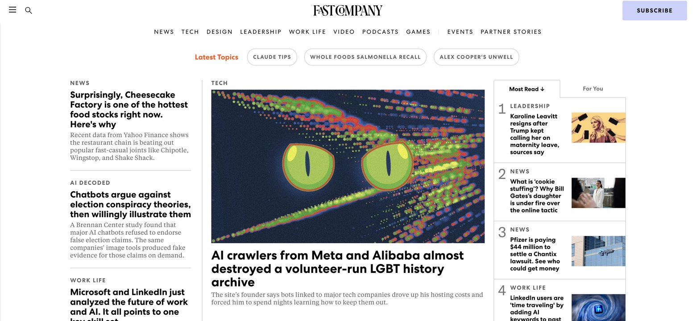

Fast Company · August 2026
‘AI crawlers from Meta and Alibaba almost destroyed a volunteer-run LGBT history archive’
Reported by Chris Stokel-Walker for Fast Company. The story of how AI bots from Meta, Alibaba and others made tens of thousands of daily requests to the LGBT History Project, driving up hosting costs and threatening to take the archive offline, and what it reveals about the unsustainable cost AI companies are externalising onto the independent communities they extract value from.
Read on Fast Company →